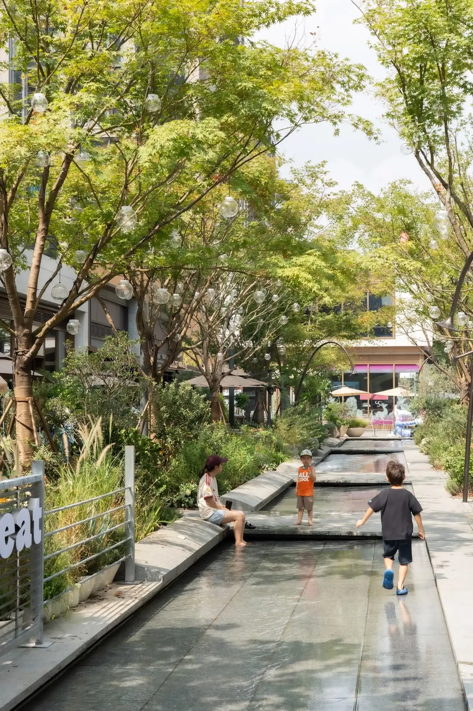
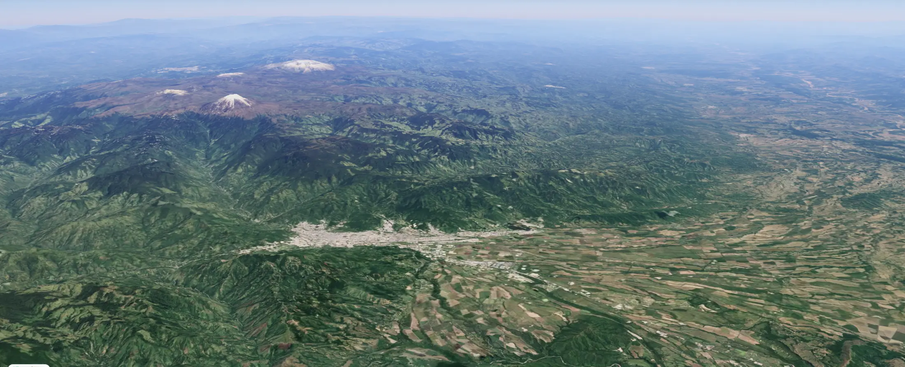
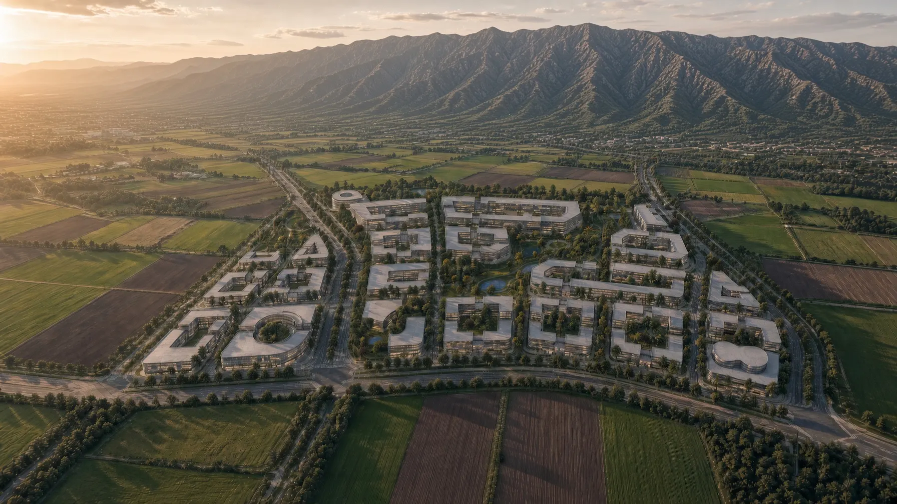
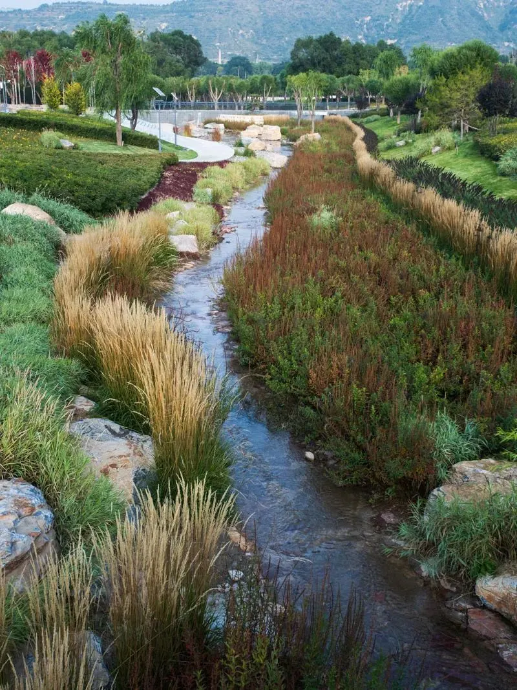
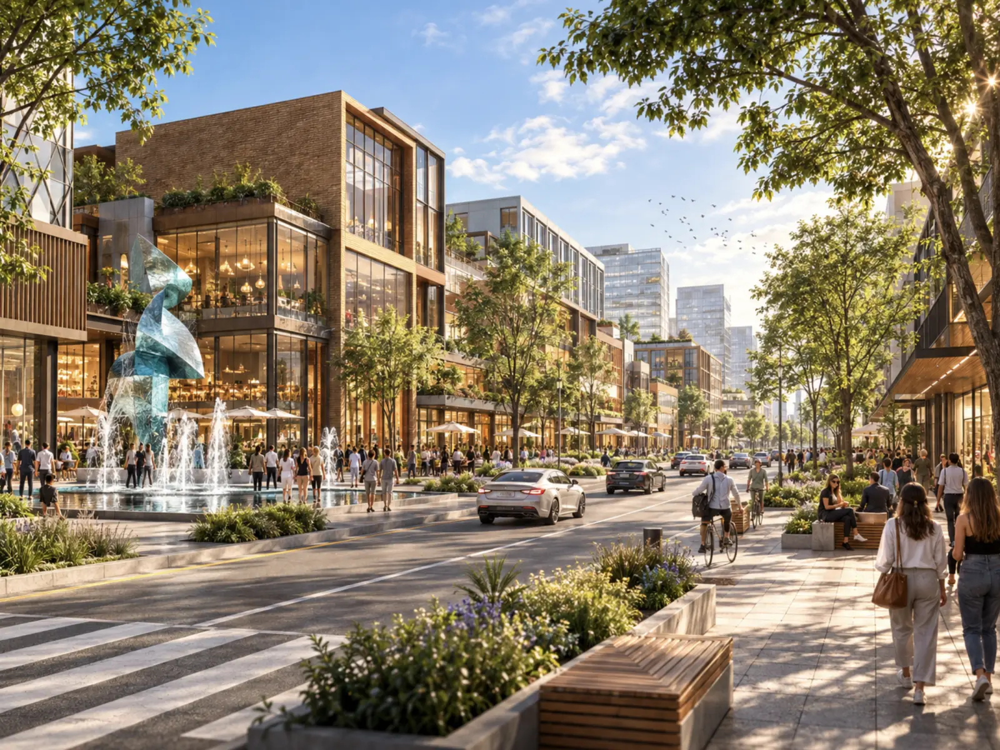
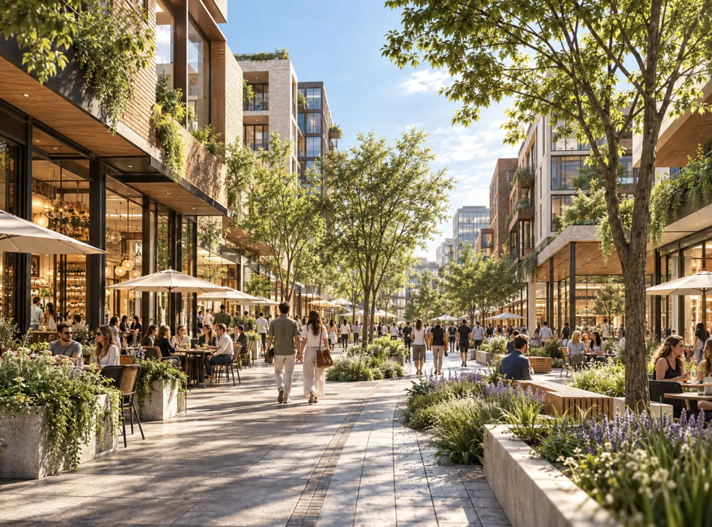

Espacio Público
Sistema de recolección y tratamiento de aguas lluvias, diseño integrado al agua.
- Captación de
aguas lluvias - Filtración en
áreas verdes - Conducción
y tratamiento


Sobre la vía al Aeropuerto Perales, Caminos del Agua está estratégicamente ubicado. Cerca a vías principales como la 103 y la 117, la zona cuenta con paisajes inolvidables y naturaleza accesible.
Proponemos una pieza de ciudad donde vivienda, comercio, servicios y espacios públicos se complementan.
Una red de parques y recorridos conecta las actividades del barrio con el paisaje.

Colombia es el cuarto país con más agua del mundo. Cada vez hay más necesidad de planificar con el agua.
Caminos del Agua nace de esta lógica, donde no nos separamos del agua y la enterramos, sino que aprendemos a diseñar con ella e integrarla desde el reciclaje, SUDS, lluvia, juegos, etc.

Sistema de recolección y tratamiento de aguas lluvias, diseño integrado al agua.

Sistema de prevención de inundaciones, de cuidado y conservación del agua.
A través de 4 zonas, dirigidas con una diagonal de sucesión de parques y plazas de agua, el proyecto propone gradualmente transicionar de lo más urbano a la naturaleza. Donde cada zona tiene una oportunidad de vivir la ciudad diferente, ofreciendo espacio para todos.
Zona comercial, punto de llegada y comienzo de la Diagonal del Agua. Es un frente urbano comercial, muy activo, conectado con el futuro CAN y la vía del aeropuerto.

Eje vital peatonal entre edificios de uso mixtos como hoteles, restaurantes, cafés, bares, viviendas de apartamentos más pequeños que quieren estar dentro del ruido y la vitalidad.

Edificios y conjuntos de vivienda con acceso directo al parque en al menos dos esquinas. Una zona tranquila pero con vitalidad.

Cerca de la naturaleza, hacia las montañas. Conjuntos cerrados, más silenciosos para las familias y quienes prefieren una zona con mayor tranquilidad.

Una ciudad diseñada desde el cuerpo: lo que se ve, se siente y se recorre.
Plazas, parques y quebrada para encontrarnos con los vecinos y con la naturaleza.
Espacio para cada edad, hogar y especie: personas, flora, fauna y agua.
Hecho con el paisaje de Ibagué: su agua, sus montañas y su flora nativa.
Un sistema vivo que gestiona la lluvia, regula el clima y cuida el barrio para todos.
Un barrio activo de día y de noche, con negocios cercanos que le dan futuro.
Calles activas, andenes continuos, buena iluminación y con ojos en la calle, para caminar y estar con tranquilidad.
Infinito Urbano